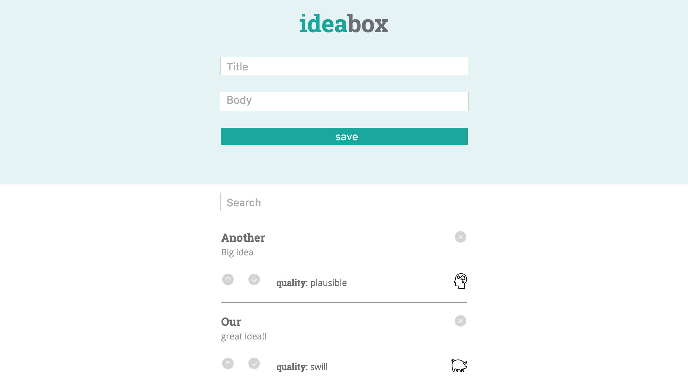

Posted on September 25, 2016
So I've been a bit sluggish on blogging...two projects back to back will do that do you. I'm writing an update now on the first of these projects, known as "Idea Box, that I completed with Adam Rice, a fellow student in my cohort. Idea Box is an application that seems simple on the surface, but its execution involved many complex moving parts. The concept is as follows: the user enters in a title and body of an idea, which then both appear in separate lines at the bottom of the application. The application stores these attributes as well as the idea's "quality" ("genius", "plausible", or "swill") in local storage. The user can change an idea's quality, delete an idea, and search for text within the title and body of ideas presently on the page. Using JSON and local storage, the application keeps track of which ideas currently exist and their quality.
You can find more details in the readme.